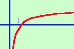

|
sviluppo y = logx  e' la funzione logaritmo a base naturale (di base il numero di Nepero e) ha le seguenti caratteristiche: la funzione e' sempre crescente e' definita solo per valori positivi della x ha un asintoto verticale nell'origine in cui la curva per x tendente a 0 da destra tende a -∞ il punto (1;0) e' di intersezione fra la curva e l'asse delle x all'aumentare delle x oltre il punto 1 la curva cresce molto lentamente tendendo a +∞ E' la funzione che tende a +∞ piu' lentemente di tutte le altre funzioni |